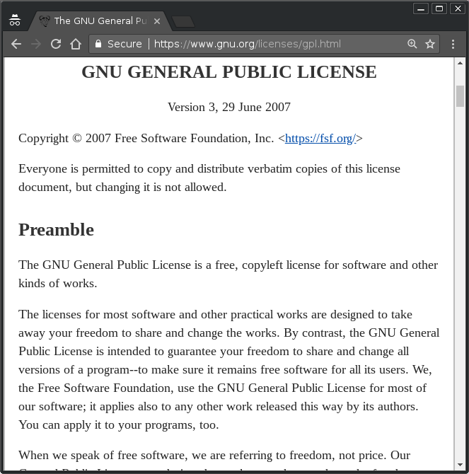

Overview of License Compliance in the Network Attached Storage Market
Bradley M. Kuhn
SNIA SDC 2018
Monday 24 September 2018
FLOSS Is Now Everywhere
15 years ago, Free, Libre and Open Source Software (FLOSS) advocates would come to an event like this to convince you to adopt such software.
FLOSS Is Now Everywhere
FLOSS is probably already in most of your products (if you a product seller) or in your data center (if you build your own).
FLOSS Is Now Everywhere
On balance, it's a good thing that FLOSS is everywhere.
… but any fad has its downsides.
Downsides to FLOSS Popularity?
The secondary FLOSS service market, ostensibly available to help companies “manage” (inexplicably called “governance” by such service providers) FLOSS intake and output.
I've dubbed this industry the compliance industrial complex.
You Deserve Such Education both FaiP &FaiF
People who really are dedicated to FLOSS do want to get paid for their work…
… but none of us think you should have to buy an expensive third-party “code scan” just to figure out your own FLOSS usage.
What's the Real Goal?
Copyleft licenses, in particular (while sometimes admittedly abused by a few) are not intended nor designed to be “gotcha” licenses.
One-Slide Introduction to FLOSS Licensing
(roughly) 2 forms of FLOSS licensing: highly permissive & copyleft.
all forms are much more permissive than any proprietary license.
FLOSS licenses encourage code reuse…
copyleft licensors additionally have a policy goal of maximizing software freedom.
Ye Olde Fower Fredoms
to use.
to learn and modify for yourself.
to copy and share.
to modify and share modified versions.
Copyleft Is a Tool, Not a Principle
— Definition of copyleft from
copyleft.org Copyleft is a strategy of
utilizing copyright law to pursue the policy goal of fostering &
encouraging the equal & inalienable right to copy, share, modify &
improve creative works of authorship. Copyleft … describes any method
that utilizes the copyright system to achieve the aforementioned
goal. Copyleft as a concept is usually implemented in the details of a
specific copyright license … Copyright holders of creative work can
unilaterally implement these licenses for their own works to build
communities that collaboratively share & improve those copylefted
creative works.
A Constitution Isn't Principles
A Constitution, and the laws that operate under it, are detailed, enforceable implementation of Principles behind a society.
The GPL As a Constitution
Compare and contrast
Constitution and Law
So, I used to say: “copyleft is the Constitution of software development community”.
But, GPL (specifically) is a detailed legal statute and Constitution rolled into one.
Copyleft suffers from the same problems any legal statue (including but not limited to): how is it enforced, and who can enforce it?
How GPL Is Enforced?
As a copyright license, copyright holders are those with the right to enforce.
Modulo single-copyright-holder “gotcha” licensors (e.g., Oracle with MySQL), generally speaking, copyright holders work on their own or with a charity to seek compliance.
The Principles
Most follow the Principles of Community-Oriented GPL Enforcement, as published by Conservancy, to ensure the policy goals of copyleft are paramount to anything else.
How Does this Relate To NAS?
First, many (not all, obviously) NAS devices run Linux, which is licensed primarily under GPLv2-only.
Second, many NAS devices run Samba, which is widely used in the NAS community for SMB.
How Does this Relate To Conservancy?
Conservancy is the primary organization doing GPL enforcement for both Linux and Samba, through coalitions of copyright holders who have formally asked Conservancy to act on their behalf in enforcement actions.
Viewing NAS Market as a n00b
We at Conservancy get a strange view of the NAS market.
While you all stay on top of things about NAS, we're on the bottom of things: noticing the products when something goes wrong.
Email is a wonderful thing for people whose role in life is to be on top of things. But not for me; my role is to be on the bottom of things.— Donald Knuth, noted Computer Scientist
The High-End Success Story
If you are a high-end NAS vendor, you probably have very little to worry about.
You likely employ (or want to employ) upstream developers.
They're going to tell you what you need to do to stay in compliance.
The High-End Success Story
It's not that high end vendors never violate GPL.
It's that it's a small community, where developers talk to each other.
High-end vendors are also sophisticated; as organizations, they learn fast (have to, to stay competitive), and are around for the long haul.
If I violate?
If you violate in the high end market, frankly, you'll likely just get a friendly call from Jeremy Allison, and he'll help you find someone to help you upstream your code.
Why Is It Easy There?
Both customer and vendor are highly sophisticated.
In particular, customers often have engineers on staff who will ask the right question during product evaluation.
Across the Train Tracks
… but I live on the bottom of things — the middle and low-end market
Email is a wonderful thing for people whose role in life is to be on top of things. But not for me; my role is to be on the bottom of things.— Donald Knuth, noted Computer Scientist
A Very Different Situation
There are of course middle & low-end vendors who do the right thing.
My sad news to them: your competitors are undercutting you by getting away with massive GPL violations on a regular basis.
What I've Gleaned
Sitting at the bottom of the supply chain, receiving reports from the general public of GPL violations, I sometimes have to reverse-engineer what's happening, but here's what I've gleaned:
I've Gleaned:
The low-end vendors who would actually send someone to SNIA SDC probably have engineering teams and hold System-on-Chip (SoC) vendors accountable on firmwares (or have your own firmwares, just like the high-end market).
Your Competition Is Cheating
Shenzhen manufacturers (obviously) mass-produce these SoC, and because FLOSS is easy to integrate and incorporate …
… they're able to cut costs by ignoring compliance requirements entirely.
IMO, it's in the interest of folks who actually invest in NAS technologies to stop these people who are free-riding on the licenses that keep the communities going.
A Few Bits About Compliance
Just in case you're not in compliance, I'll spend a few minutes about copyleft compliance requirements.
My first piece of advice remains: ask your engineers first, not your lawyers!
A Legal Mechanism for Technical Details
While hearing it's a copyright license might indicate the lawyer is your first call…
…in fact, most of the most violated terms of copyleft are more technology-focused than legally-focused.
Indeed, the most important requirement is complete, corresponding source (CCS).
(Don't believe the compliance industrial complex hype!)
Copyleft at its Core
At its core, copyleft's primary goal is to give downstream users the means and capacity to generate and utilize binaries in the same manner that upstream did.
How GPLv3 Says CCS
The “Corresponding Source” for a work in object code form means all the source code needed to generate, install, and (for an executable work) run the object code and to modify the work, including scripts to control those activities.
— GPLv3§1
How GPLv2 Says CCS
You may copy and distribute the Program (or a work based on it, under § 2) in object code or executable form under the terms of § 1 & 2 above provided that you … [a]ccompany it with the complete corresponding machine-readable source code … The source code for a work means the preferred form of the work for making modifications to it. For an executable work, complete source code means all the source code for all modules it contains, plus any associated interface definition files, plus the scripts used to control compilation and installation of the executable.
— GPLv2§3
Testing CCS
Enforcement must often use a “know it when I see it” standard. (i.e., can we take your CCS build it, and install it?)
We’ve reached compliant CCS with hundreds of companies: but that didn’t mean the CCS was pretty.
Best Way to Test CCS?
Find an embedded engineer who didn't work on the product and ask that engineer to build from sources a new firmware and install it on the device.
Lessons Learned from Examining A Pristine Example
There's a full paper available online on building CCS:
compliance.guide/pristine-example
It’s part of a larger tutorial called Copyleft and the GNU General Public License: A Comprehensive Tutorial and Guide at copyleft.org.
The Guide contains over 150 pages of tutorials materials about how copyleft works & how copyleft works.
More Info / Talk License

URLs / Social Networking / Email:
- Pls. support Conservancy
- The Copyleft Guide is freely available & welcomes contributions at copyleft.org
- You can join the GPL enforcement coalition of Linux developers.
- Conservancy: sfconservancy.org & @conservancy.
Presentation and slides are: Copyright © 2017, 2018 Bradley M. Kuhn, and are licensed under the Creative Commons Attribution-Share Alike 4.0 International License. Slide Source available.